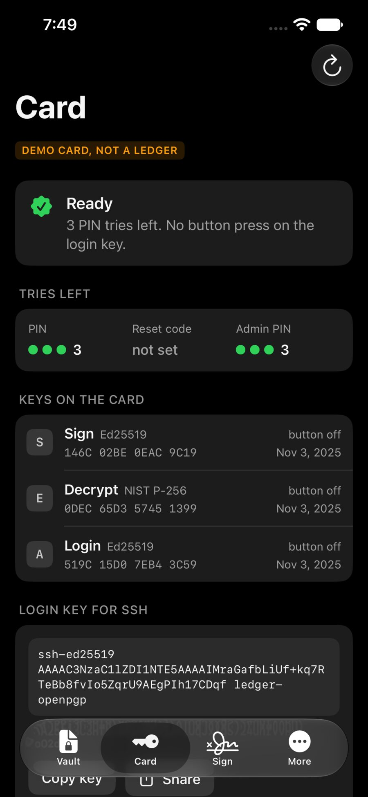

07 / 09Seal guide
Use a Ledger
Already have OpenPGP keys on a Ledger? Seal uses them over USB-C, and never changes them.
Connect it
- 1
Plug the Ledger into the iPhone with a USB-C cable and unlock it.
- 2
On the Ledger, open the OpenPGP app.
- 3
Open Seal’s Card page. It reads the card by itself.

The Card page shows how many PIN tries are left, the three keys on the card (sign, decrypt, login), and the login key for SSH. Seal reads; it never writes to the card, never changes a PIN, and never makes or deletes a key there.
Use its keys
- Seal for it: the card’s decrypt key shows on the sealing screen as THE CARD. Tick it, or put it in a vault.
- Open with it: a file for the card asks for the OpenPGP PIN, then
Open with the Ledger. - Sign with it: on the Sign page pick
The Ledger, type the PIN, andSign with the Ledger.
The OpenPGP PIN is not the PIN that unlocks the Ledger. It goes to the card and nowhere else: not saved, not logged. Three wrong tries and the card locks.
Why use both
The Ledger and your iPhone make a good pair: tick both when you seal, and either one opens the file. Lose the phone, and the Ledger still opens everything.